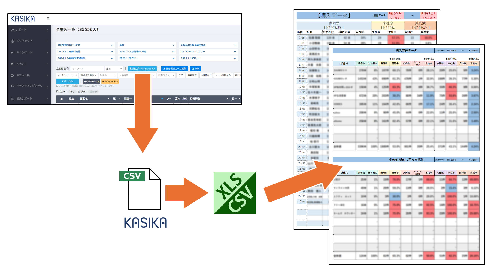
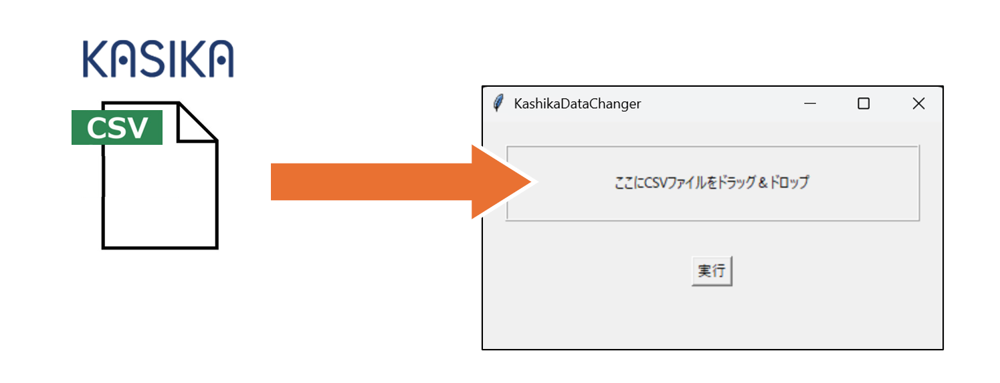
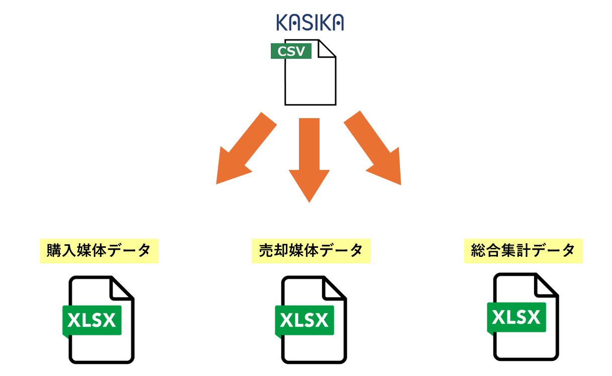
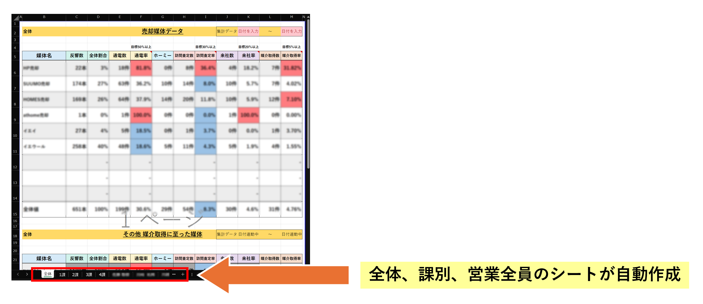
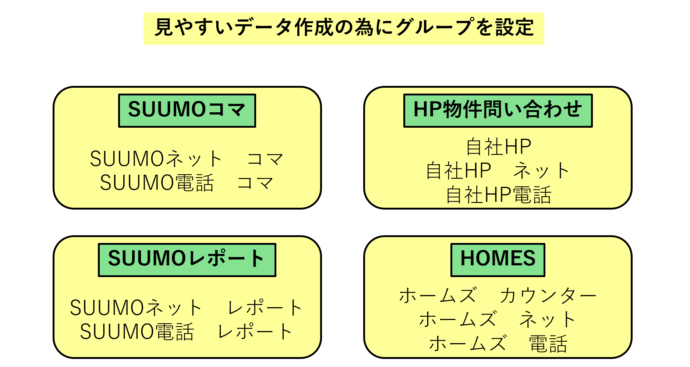
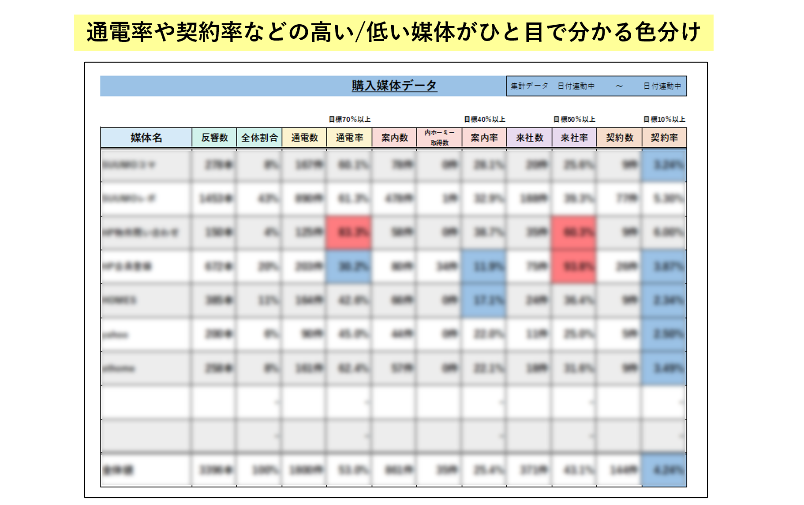

KASHIKAデータ集計 (KashikaDataChanger)

導入効果
⏱️ 時短：手作業による膨大な集計・転記作業をゼロにし、数秒でレポートを生成
🎯 精度：計算ミスや転記ミスを排除し、信頼性の高い統計データを確保
📊 可視化：条件付き書式により、成績の優劣や異常値を一目で把握可能
開発の背景・概要
マーケティングツール「KASHIKA」から出力されるデータは非常に有用ですが、そのままでは会議資料として活用しづらく、担当者が手作業でExcelにまとめ直す作業が常態化していました。
KASHIKAデータ集計は、この定型的な手作業を自動化するために開発されました。ドラッグ＆ドロップひとつで、購入・売却それぞれの媒体別反響数や契約率を算出し、そのまま貼り出せるレベルの高品質なレポートを自動作成します。
主な機能
ドラッグ＆ドロップの簡単操作
複雑な設定は一切不要です。KASHIKAからダウンロードしたCSVファイルをソフトにドロップして「実行」ボタンを押すだけ。誰でも簡単に高度な集計作業が行えます。

3種のレポートを同時出力
1つのCSVファイルから「購入媒体データ」「売却媒体データ」「総合集計データ」の3つのExcelファイルを一括生成します。用途に合わせて必要なデータをすぐに取り出せます。

課・担当者別の自動シート分割
全体集計だけでなく、CSV内の情報を読み取って「課別」「担当者別」の集計シートを自動で作成します。個人のパフォーマンス分析も瞬時に完了します。

インテリジェントな媒体マッピング
SUUMO、HOME'S、自社HPといった多種多様な反響経路を、あらかじめ定義されたマスターに基づき自動でカテゴリ分けします。表記の揺れもシステムが吸収し、正確にカウントします。

異常値を知らせる条件付き書式
集計後のExcelには自動で条件付き書式が設定されます。例えば、通電率や来社率が高い場合は赤、極端に低い場合は青で色分けされるなど、分析をサポートする工夫が施されています。
